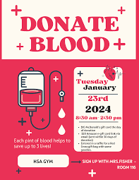

At Atlas High School we
believe that extracurricular
activities play a vital role
in students’ personal growth
and development. Our school
offers a wide range of clubs
and organizations designed
to encourage creativity,
leadership, teamwork, and
community engagement.
Whether you're interested in
arts, sports, science,
culture, or making a
difference in the world,
there’s a club for you!
Why Join a Club?
Personal Growth:
Develop new skills,
discover your talents,
and build confidence.
Friendship & Community:
Meet like-minded
students, make new
friends, and connect
with peers who share
your interests.
Leadership
Opportunities:
Take on leadership roles
and make a positive
impact on your school
and the community.
Fun & Creativity:
Engage in exciting
activities that
challenge you to think
outside the box and have
fun while learning.
How to Join
Joining a club is easy!
Simply visit the Club Fair
during the first week of
school or reach out to the
club’s faculty advisor for
more information. Many clubs
also hold open meetings at
the start of each semester
where you can meet the
members and decide if it’s
the right fit for you.
Student Leadership & Club
Participation
Clubs provide a unique
opportunity to get involved
in student leadership.
Whether you’re organizing an
event, leading a meeting, or
helping with fundraising
efforts, being part of a
club allows you to take on
responsibilities that foster
teamwork and personal
accountability.
Club Events & Activities
Check out our calendar for
upcoming events hosted by
our clubs, including
fundraisers, social
gatherings, workshops, and
competitions. There’s always
something exciting going on!
Student Clubs for Every
Interest
At Atlas High School we’re
proud to offer a dynamic and
diverse selection of clubs
that reflect the passions
and talents of our students.
Whether you're interested in
developing leadership
skills, exploring new
hobbies, or making a
positive impact in your
community, there’s a place
for you. Joining a club is
the perfect way to enrich
your school experience,
expand your network, and
discover new interests!
Featured Clubs:
Art Club
For students passionate
about creating and
expressing themselves
through various forms of
art. Whether you're a
beginner or an advanced
artist, there’s a space
for everyone to
experiment with
different mediums and
techniques.
Science Club
Dive deep into the
wonders of science!
Participate in fun
experiments, science
fairs, and engage with
guest speakers in fields
ranging from
environmental science to
robotics.
Debate Team
Sharpen your public
speaking and critical
thinking skills. The
Debate Team engages in
local and national
competitions,
challenging students to
explore current events
and argue with
integrity.
Drama Club
If you love the stage,
the Drama Club is the
place for you! Whether
you’re acting, designing
sets, or working behind
the scenes, Drama Club
provides opportunities
to express creativity
and collaborate on
exciting productions.
Community Service Club
Passionate about giving
back? Join the Community
Service Club and
participate in local
charity events, service
projects, and
initiatives that make a
difference in our
community.
Music and Band Club
A place for musicians of
all levels! Whether you
play an instrument or
love singing, this club
offers opportunities for
jam sessions,
performances, and
collaborations with
other clubs.
Tech and Coding Club
If you’re interested in
technology and
programming, this is
your spot! Learn to
code, build apps, and
engage in innovative
tech projects alongside
your peers.
The Red Cross
Club is a
student-led organization
that focuses on
humanitarian work,
volunteerism, and
community service. It is
part of the larger
International Red Cross
and Red Crescent
Movement, which aims to
alleviate human
suffering, protect life
and health, and ensure
respect for human
dignity in times of
conflict, disaster, and
everyday emergencies

Club Benefits:
Enhance Your Resume:
Participation in clubs
demonstrates your
commitment, leadership,
and teamwork abilities.
Expand Your Horizons:
Learn new skills, attend
workshops, and meet
guest speakers in
various fields.
Academic Support:
Many clubs, like the
Math Club or Science
Club, offer tutoring or
study sessions to help
you succeed in your
courses.
How to Get Involved:
Joining a club is simple,
and we encourage all
students to explore their
interests! Here’s how to get
started:
Attend the Club Fair:
Each year, we host a
Club Fair where all our
clubs gather to showcase
what they’re about. You
can meet club leaders,
ask questions, and sign
up.
Contact Club Advisors:
If you have a specific
club in mind, reach out
to the faculty advisor
listed on the club’s
page for more details
about meetings and how
to join.
Follow Us on Social
Media: Many
clubs maintain social
media pages to keep
members updated on
meetings, events, and
opportunities. Stay
connected and be in the
loop!
Club Calendar:
Stay up-to-date with all the
exciting events,
fundraisers, competitions,
and meetings hosted by our
clubs. Here are some
upcoming events to look out
for:
Art Show: An
exhibition of student
art projects.
Science Fair: A
showcase of innovative
student experiments and
research.
Charity Walkathon:
A community fundraiser
hosted by the Community
Service Club.
Talent Show: A
fun night where students
can showcase their
talents, from music to
comedy.
Be sure to check our
calendar for more!
Student Leadership
Opportunities:
Many of our clubs have
student-run leadership
roles, offering
opportunities to develop key
leadership skills. If you’re
interested in being more
involved, consider running
for a leadership position or
becoming a club officer.
Get Involved, Stay
Connected:
Being part of a club isn’t
just about the
activities—it’s about
building connections,
finding your community, and
having fun. Clubs are a
place where you can make
lasting friendships and grow
as an individual. So what
are you waiting for? Join a
club today and take your
school experience to the
next level!
Participating in a club is
more than just an
extracurricular activity;
it’s an opportunity to make
an impact. Many of our clubs
participate in community
service, school spirit
events, and charitable
initiatives. This is your
chance to help shape the
school’s culture and give
back to the community.

.jpeg)
.jpeg)
.jpeg)